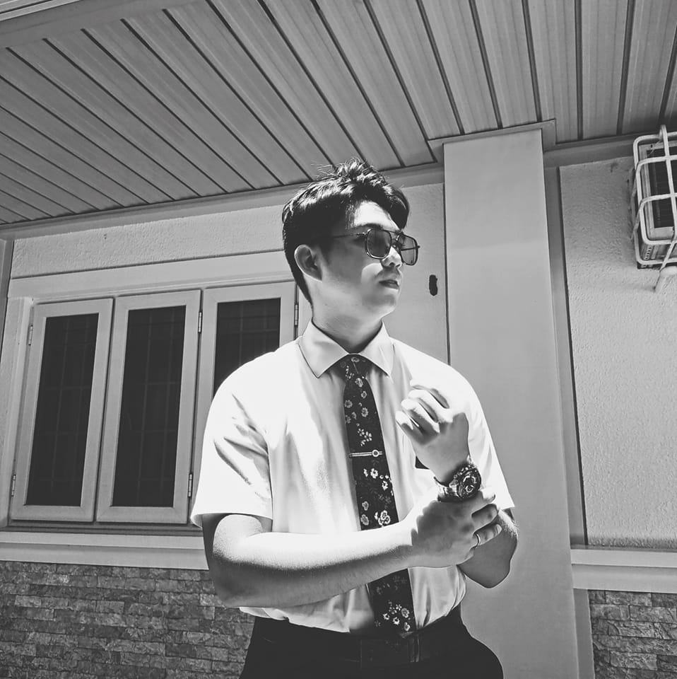

Kyle Aldrich Moran | WDD 130
Hello, I'm Kyle Aldrich Moran!
INTJ-A |♋| June 27, 2001
I am an online student from Metro Manila, Philippines. I enjoy exploring the city on my scooter and discovering new places to eat and visit. In my free time, I also enjoy playing video games and watching movies. I am currently pursuing a degree in Computer Science at BYU-Idaho Online with the goal of becoming a Software Developer.
I am passionate about technology and I am excited to learn new skills and build a career in this field.